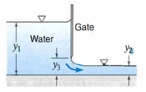
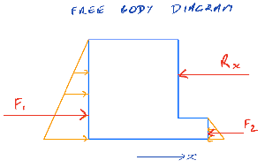
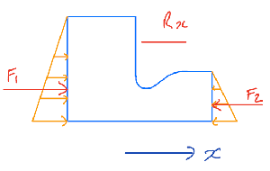
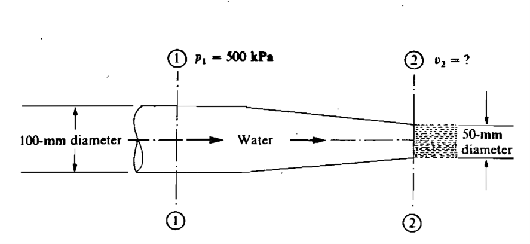
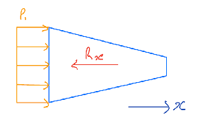
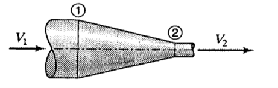

Module 5: Conservation of Momentum#
Global variables:
Problems for Lecture 28: Conservation of Linear Momentum 1#
Question 1 (***)[R]#
Water flows through a sluice gate as shown below. The friction losses through the gate are estimated to be 0.2 m. Find the horizontal thrust of the water per meter width on the sluice gate. Given: y1 = 2.2 m, y2 = 0.4 m, y3 = 0.5 m

Answer
\( 12.33 \; kN\;to \;the \;right \)
Hint
Apply the momentum equation in the horizontal direction.
Find the velocities before and after the gate using the Energy equation.
Apply Newton’s Second Law to find the horizontal force.
Solution
Show code cell outputs

Show code cell outputs
Continuity equation:
Conservation of energy:
Solving for \(( v_1)\):
\(N \mathrm{II}\):
Show code cell outputs
Show code cell outputs
The force on the structure is the same size but in the opposite direction (\(N \mathrm{III}\)）:
Show code cell outputs
Question 2 (***)#
Flow occurs over a spillway with a width of 100 m. The spillway has a cross section as shown below. The water depth on the upstream side of the spillway (y1) is 20 m, and on the downstream side (y2) is 1.5 m. The friction energy headloss over the spillway is 1.2 m. Determine the horizontal force of the water on the spillway.

Answer
\( 147.7 \; MN\; to \; the \; right \)
Hint
Apply the momentum equation in the horizontal direction.
Find the velocities using the Energy equation.
Apply Newton’s Second Law to find the horizontal force.
Solution

Show code cell outputs
Conservation of mass:
Conservation of Energy:
Once the velocities at both sections are determined, the conservation of momentum can then be applied:
The centroid of the spillway is:
Show code cell outputs
Show code cell outputs
The force on the structure is on the same site but opposite in direction (\(N \mathrm{III}\)）: \(F_x = 147.735 MN\) to the right.
Question 3 (***)[R]#
The inlet water passage shown in the figure below is 3 m wide (normal to the plane of the figure) and narrows down to be 2.5 m wide at the outlet section. Determine the horizontal force acting on the structure. Assume ideal flow.

Answer
\( 12.2 \; m^3/s\; ;\;11.98\;kN\;to\;the\;right \)
Hint
Apply the momentum equation in the horizontal direction.
Find the velocities using the Energy equation.
Apply Newton’s Second Law to find the horizontal force.
Solution
Show code cell outputs

Show code cell outputs
Conservation of mass:
Conservation of energy:
\(N \mathrm{II}\):
Show code cell outputs
Show code cell outputs
Solving for v_1 we have v_1= 2.03 m/s
Show code cell outputs
Show code cell outputs
The force on the structure is the same size but in the opposite direction:
Show code cell outputs
Problems for Lecture 29: Conservation of Linear Momentum 2#
Question 1 (**)[R]#
A nozzle is attached to a pipe as shown below. The inside diameter of the pipe is 100 mm, while the water jet exiting from the nozzle has a diameter of 50 mm. The pressure at section 1 is 500 kPa, and the velocity at sections 1 is 6 m/s. Calculate the force of the water on the nozzle.

Answer
\( 3.079\; kN\; to\; the\; right \)
Hint
Use the continuity equation to find the velocity at the nozzle exit.
Apply \(N \mathrm{II}\) equation in the x-Direction to calculate the force on the nozzle.
Solution
img = Image.open(r"figures/29_Momentum_1.png")
img= img.resize((300,190))
img

Show code cell outputs
Show code cell outputs
Question 2 (**)#
The diameters in the figure below are 750 mm and 500 mm. The pressure at point 1 is 650 kPa and the velocity 2.8 m/s. Neglecting friction, find the resultant force on the horizontal conical reducer if water flows:
a. to the right.
b. to the left.
c. What would happen with the previous answers if we did not neglect friction?

Answer
\( a) \;158.3 \; kN\;to\;the\;right \)
\( b) \;158.3 \; kN\;to\;the\;right \)
\( c) \;increase \; Fx\;in\;(a)\;and\;decrease\;Fx\;in\;(b) \)
Hint
Apply the conservation of mass to relate the flow rates at different sections and solve for the unknow velocity.
Apply the energy equation.
Apply \(N \mathrm{II}\) in the horizontal direction to calculate the force on the reducer.
Question 2 (a)
Solution
Show code cell outputs
Conservation of mass:
Conservation of energy:
Conservation of momentum:
Show code cell outputs
Show code cell outputs
Force of the water on nozzle is 158.3 kN to the right
Question 2 (b)
Show code cell outputs
Apply the conservation of mass to relate the flow rates at different sections and solve for the unknown velocity.
Apply the energy equation, assuming no friction, with the direction of flow reversed.
Apply NII in the horizontal direction to calculate the force on the reducer, considering the reversed flow direction.
Question 2 (c)
Show code cell outputs
Assuming the same pressure at the larger section in both cases, as given, friction will reduce \(F_2\) and therefore increase \(R_x\) in case (a) and do the opposite in case (b).